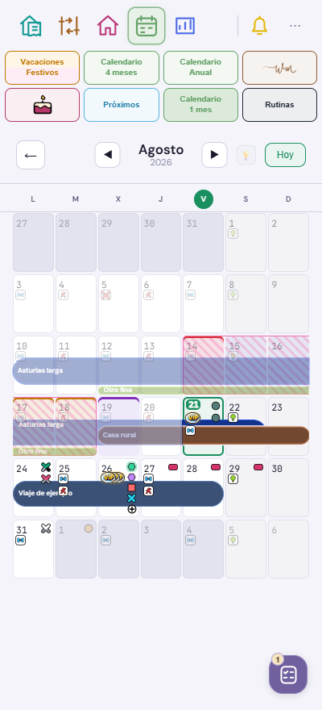
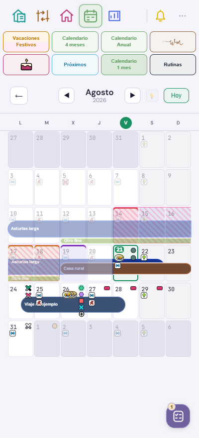

← Mapa visualEl mes y sus viajes, con los límites claros.
Comparación con los mismos datos ficticios: viaje del 24 al 28 de agosto, ida a las 15:00 y vuelta a las 10:00, sin una hora general en el evento.
En v503 la barra empieza a mitad del lunes y termina a mitad del viernes. Los días 5 y 6 de septiembre quedan apagados como los demás días ajenos a agosto.
Antes · v502
Las horas de transporte no recortaban la barra y el fondo de fin de semana prevalecía fuera del mes.
Ahora · v503
Ida y vuelta delimitan las medias casillas; los fines de semana fuera del mes conservan su apagado.
La regla de las 13:00 se aplica al calendario de un mes. La hora general sigue como respaldo para los eventos antiguos sin hora de transporte. Esta corrección no cambia las fechas guardadas.